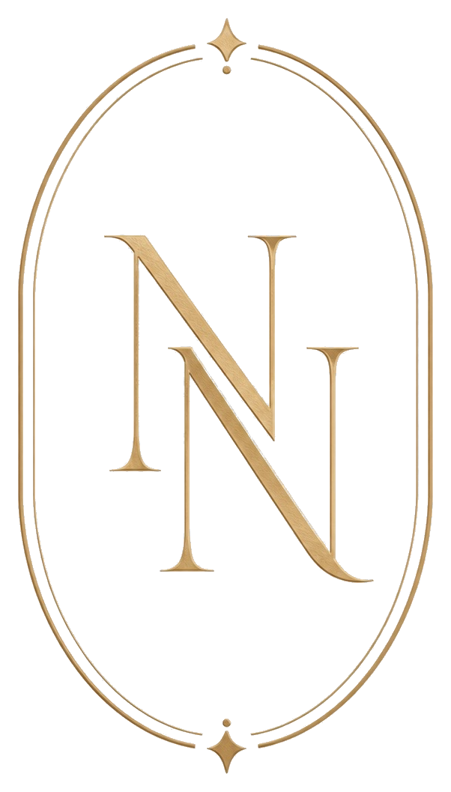
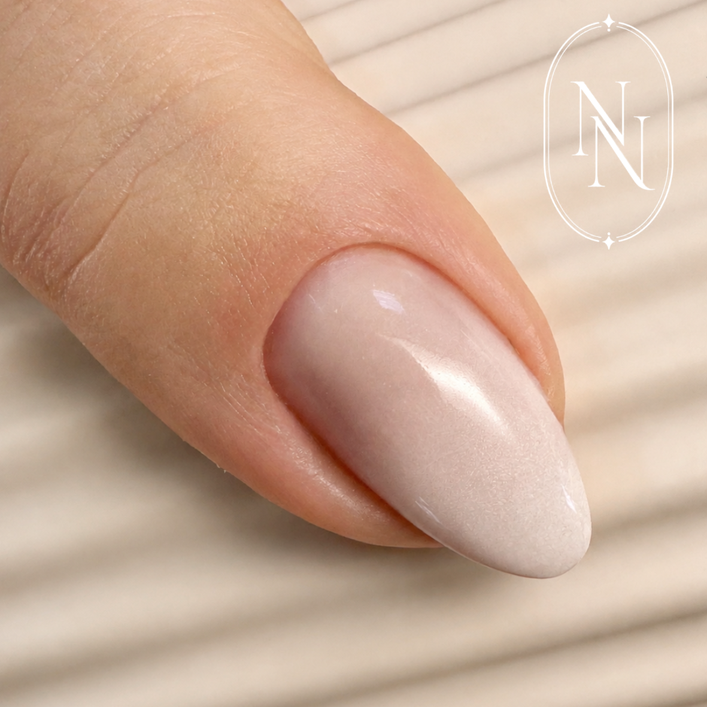

Extensions & gel
Extensions au chablon ou popit, gel sur capsules classiques et capsules américaines : plusieurs techniques pour créer la longueur et la forme souhaitées.

NALLYSUne couleur discrète, une longueur choisie ou un détail de nail art : découvrez les possibilités pour composer votre prochaine pose.
Extensions au chablon ou popit, gel sur capsules classiques et capsules américaines : plusieurs techniques pour créer la longueur et la forme souhaitées.
Une prestation sur vos ongles naturels, pour travailler leur tenue et leur finition tout en conservant votre longueur.
Pour les mains, les pieds ou les deux. La préparation et la couleur unie sont comprises dans la prestation.

French, baby-boomer, chrome, strass ou nail art : les finitions permettent de personnaliser votre pose.
Pour les créations complexes, une estimation est communiquée avant la prestation. Le prix dépend notamment du nombre d’ongles et du travail demandé.
Remplissages, déposes et réparations complètent la carte des prestations. Pensez à préciser si vous portez déjà une pose réalisée chez une autre professionnelle.
Voir la carte des tarifsPréparer mon rendez-vous →